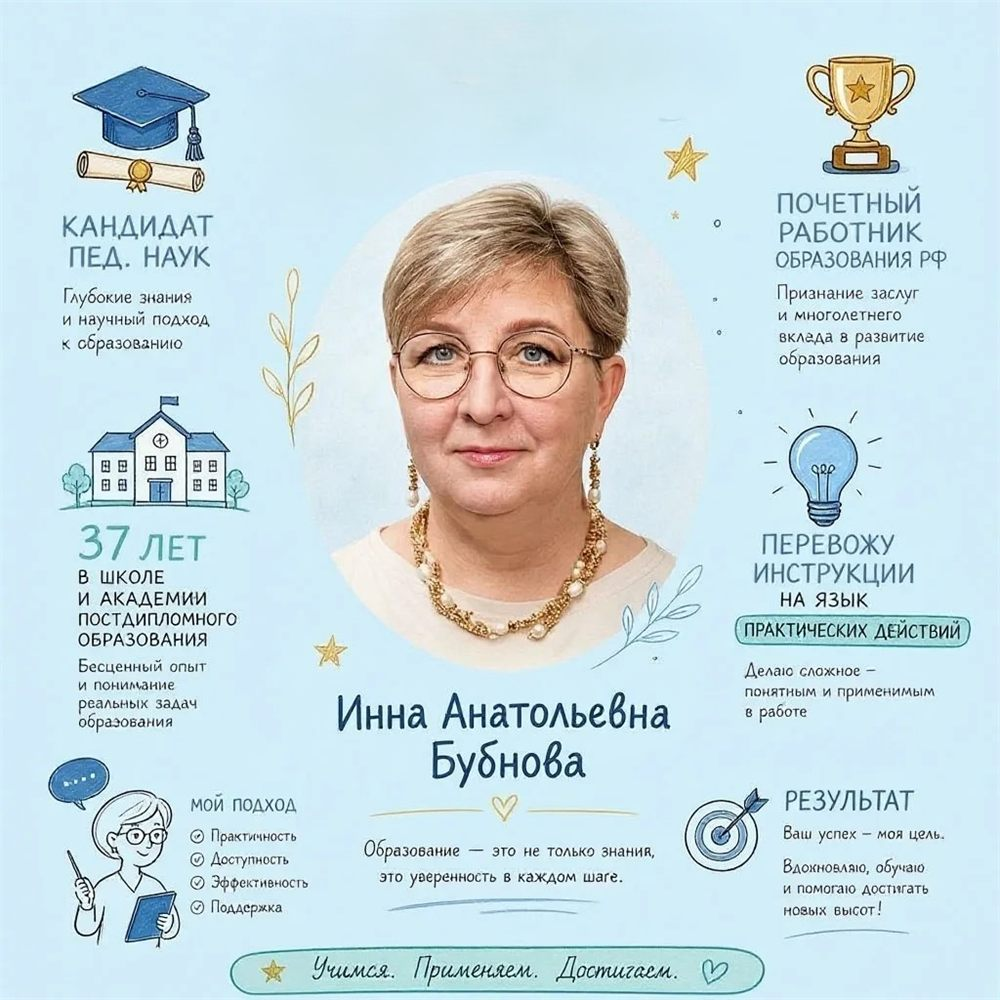
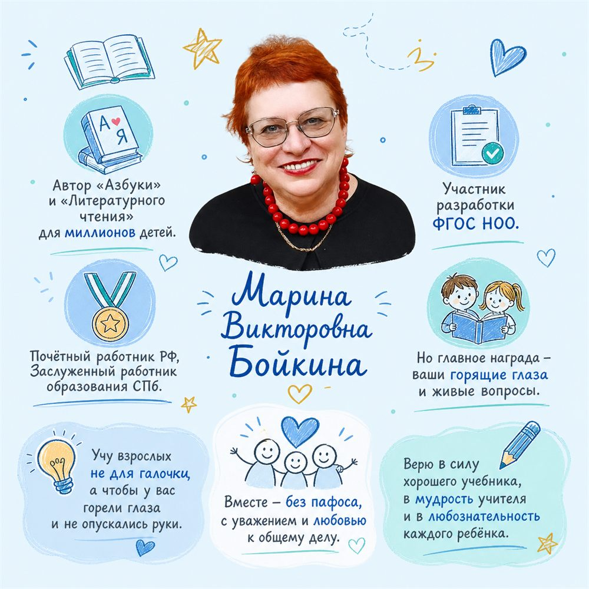
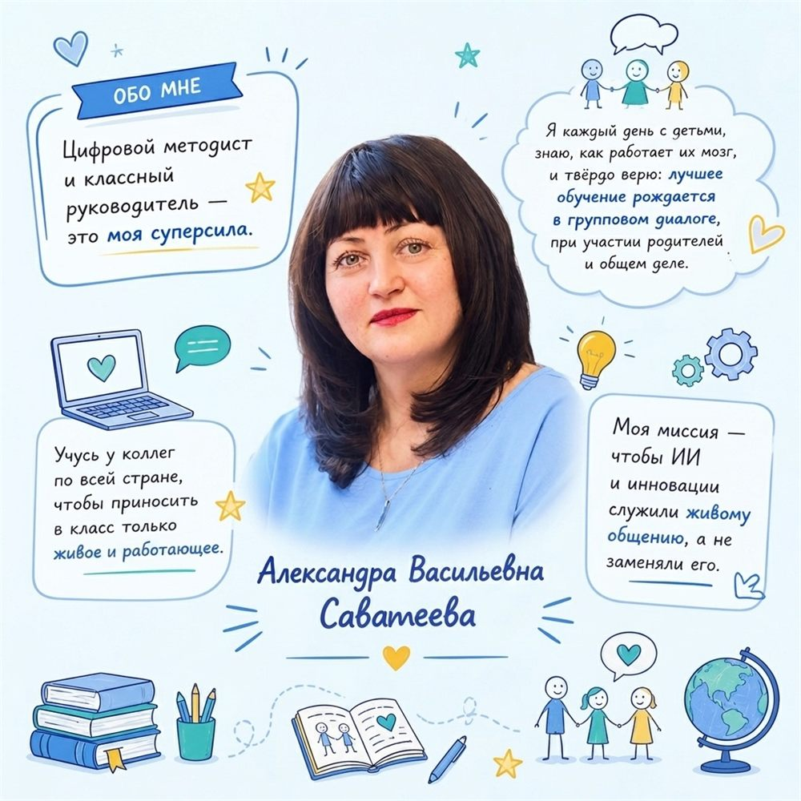

Академия начальной школы
Учебные материалы для младших школьников, учителей и родителей. Разделы собираются по одному — начните с того, что нужно сейчас.
-
Как писать изложение
Четыре раздела по классам: по вопросам (2 класс), по плану (3 класс), выборочное и сжатое (4 класс). Тексты, планы уроков и рабочие листы в PDF.
Открыть раздел -
AI-дайджест для новичков
Десять коротких материалов про искусственный интеллект: что это, как пользоваться и где подвох. Читается за пять минут.
Открыть дайджест
Авторы
Кто собирает материалы-

Инна Анатольевна Бубнова -

Марина Викторовна Бойкина -

Александра Васильевна Саватеева
Нажмите на карточку, чтобы открыть её в полном размере и прочитать текст.